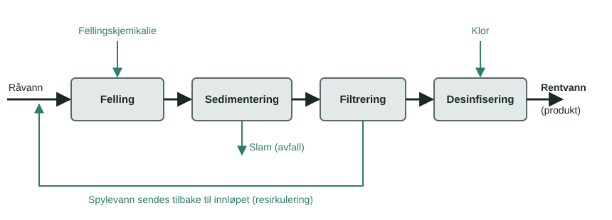

Hva er et blokkskjema?
Et blokkskjema er den enkleste tegningen av en prosess. Det viser hvilke trinn prosessen har, og hvordan stoffene går fra trinn til trinn. Når du skal sette deg inn i et nytt anlegg, er blokkskjemaet et godt sted å begynne.
Bokser og piler
Et blokkskjema er bygd opp av bare to ting:
- Bokser. Hver boks er ett trinn i prosessen, for eksempel blanding, reaksjon, filtrering eller tørking. Navnet på trinnet står inne i boksen.
- Piler. Pilene viser hvor stoffene går, og i hvilken retning. Ved pilene står det hva som strømmer, for eksempel «råvann», «slam» eller «produkt».
Boksen sier ingenting om hvordan utstyret ser ut. Et trinn kan bestå av én tank eller av mange maskiner. Det er bare hva som skjer i trinnet, som teller.
Et eksempel: vannverket
Figuren viser et blokkskjema for et vannverk som lager drikkevann av vann fra en innsjø eller en elv.

Slik er trinnene i vannverket:
- Felling: Et fellingskjemikalie får små partikler i vannet til å klumpe seg sammen.
- Sedimentering: Klumpene synker til bunns og tas ut som slam.
- Filtrering: Vannet renner gjennom et filter som holder igjen resten av partiklene. Filteret spyles rent med jevne mellomrom, og spylevannet sendes tilbake til innløpet.
- Desinfisering: Klor dreper bakterier, slik at vannet blir trygt å drikke.
Slik leser du et blokkskjema
Hovedstrømmen går vanligvis fra venstre mot høyre, slik du leser en tekst. Gå gjennom skjemaet i denne rekkefølgen:
- Finn det som går inn. Hva er råstoffet? Her er det råvann.
- Følg hovedstrømmen fra boks til boks. Si med egne ord hva som skjer i hvert trinn.
- Finn det som går ut. Hva er produktet, og hva går ut som avfall eller biprodukt? Her er rentvann produktet og slam avfallet.
- Se etter tilsetninger. Hva tilsettes underveis? Her er det fellingskjemikalie og klor.
- Se etter piler som går bakover. En pil tilbake til et tidligere trinn betyr resirkulering. Her sendes spylevannet tilbake, slik at vannet i det ikke går til spille.
Legg fingeren på råstoffet og følg pilene til du kommer til produktet. Klarer du å forklare hvert trinn underveis, har du forstått skjemaet.
Hva viser ikke et blokkskjema?
Blokkskjemaet gir oversikt, men har få detaljer. Det viser ikke rør, ventiler, pumper eller målere. Det viser heller ikke hvor stort utstyret er, eller hvor det står i anlegget. Til det trenger du mer detaljerte skjemaer. Dem lærer du om senere i temaet:
| Skjema | Hva det viser |
|---|---|
| Blokkskjema | Trinnene i prosessen og strømmene mellom dem |
| Prosessflytskjema | Hovedutstyret og de viktigste strømmene, ofte med mengde, temperatur og trykk |
| Teknisk flytskjema (P&ID) | Alt utstyr, alle rør, ventiler og instrumenter, tegnet med faste symboler |
Hvorfor bruker vi blokkskjema?
- Oversikt: En ny operatør får raskt et bilde av hele anlegget.
- Planlegging: Når et nytt anlegg skal bygges, tegnes blokkskjemaet først. De detaljerte skjemaene kommer senere.
- Beregninger: Blokkskjemaet er utgangspunktet når du regner ut hvor mye som går inn og ut av hvert trinn (massebalanse). Se temaet Fysiske prinsipper.
Test deg selv
1. Hva viser en boks i et blokkskjema?
- En bestemt tank med riktig størrelse
- Ett trinn i prosessen
- En ventil eller en pumpe
Hver boks er ett trinn, for eksempel filtrering. Boksen sier ikke noe om hvordan utstyret ser ut eller hvor stort det er.
2. Hva viser pilene i et blokkskjema?
- Hvor stoffene går, og i hvilken retning
- Hvor rørene ligger i anlegget
- Hvilke trinn som er farligst
Pilene viser strømmene mellom trinnene. Hvor rørene faktisk ligger, står i mer detaljerte skjemaer.
3. I vannverket: Hva går ut av prosessen fra sedimenteringen?
- Rentvann
- Fellingskjemikalie
- Slam
I sedimenteringen synker klumpene til bunns og tas ut som slam. Rentvann er produktet og kommer ut etter desinfiseringen.
4. En pil går fra et trinn og tilbake til et tidligere trinn. Hva betyr det?
- At prosessen har stoppet
- At en del av strømmen sendes tilbake og brukes på nytt (resirkulering)
- At skjemaet er tegnet feil
En pil bakover betyr resirkulering. I vannverket sendes spylevannet fra filteret tilbake til innløpet.
5. Hva finner du ikke i et blokkskjema?
- Navnet på trinnene
- Det som tilsettes underveis
- Ventiler og målere
Ventiler og målere står i det tekniske flytskjemaet (P&ID). Pumper og annet utstyr står også i prosessflytskjemaet. Blokkskjemaet viser bare trinnene og strømmene.
Ordliste
| Begrep | Forklaring | Engelsk |
|---|---|---|
| blokkskjema | En forenklet tegning av en prosess. Hvert trinn er en boks, og pilene viser hvordan stoffene går mellom trinnene. | block diagram |
| hovedstrøm | Strømmen som går gjennom hele prosessen, fra råstoff til produkt. | |
| råstoff | Stoffet som går inn i et anlegg og blir gjort om til produkt, for eksempel malm, olje eller korn. | feedstock, raw material |
| produkt | Stoffet eller varen et anlegg lager for å selge eller bruke videre. | |
| biprodukt | Noe som blir til overs i en prosess, men som har en nytte og kan selges eller brukes. | |
| resirkulering | Å sende en del av en strøm tilbake til et tidligere sted i prosessen, slik at stoffet blir brukt på nytt. | recycle stream |
Les mer
- Rekkefølgen i anlegget i temaet Enhetsoperasjoner viser hvilke trinn et prosessanlegg vanligvis har.
Om kildene: Teksten, eksemplene og figurene på denne siden er laget for dette nettstedet. Siden bygger på undervisningsopplegg i kjemiprosess- og laboratoriefag ved Sauda vgs, som er utarbeidet med utgangspunkt i blant annet Kjemien stemmer, Laboranten og åpne nettkilder.